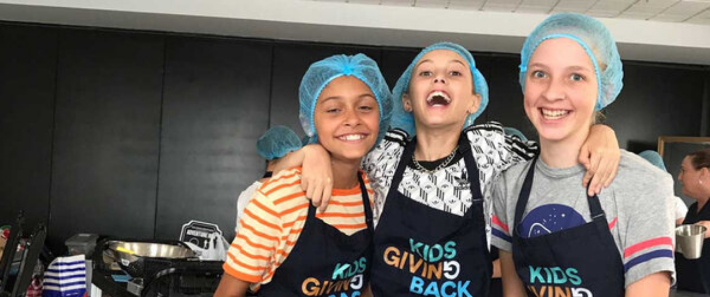
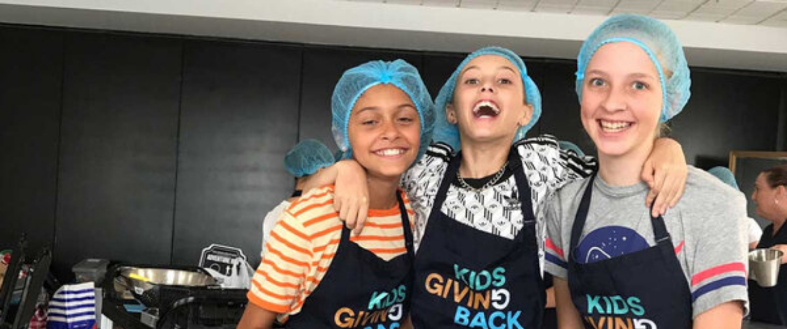

Thanks Harris Farm!
If you keep seeing the photos of the fruit and veggies we are using in programs we are purchasing them from Harris Farm Markets! The team there have been amazing with easy online ordering and home delivery ( with super easy tracking and great insulated bags!!) AND also allowing us use of their staff discount! We believe the meals our volunteers prepare for the homeless must be of the same standard, quality and flavour that we would serve to guests in our home. That is why every small detail counts – like garnishing the meals and choosing high quality, fresh fruit and veg to prepare them with. Our programs of course are more than just food prep, they are educational. We teach children about homelessness through the sharing of stories and we assist them to act with respect at all times preserving dignity and offering hope for those we help. Thank you to the Harris Family for supporting our mission to create #nextgenerationofgenerosity